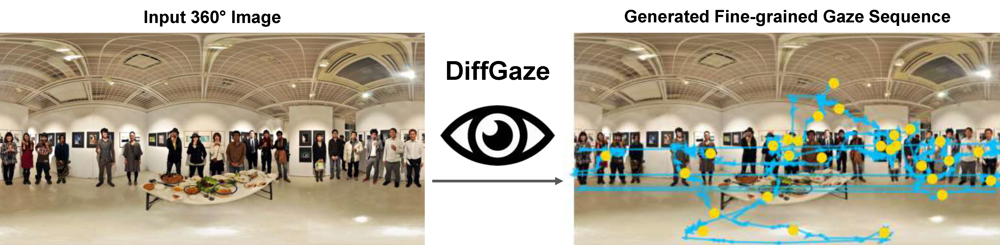

DiffGaze: A Diffusion Model for Modelling Fine-grained Human Gaze Behaviour on 360° Images
Chuhan Jiao, Yao Wang, Guanhua Zhang, Mihai Bâce, Zhiming Hu, Andreas Bulling
ACM Transactions on Interactive Intelligent Systems, 2025.

Abstract
Modelling human gaze behaviour on 360° images is important for various human-computer interaction applications. However, existing methods are limited to predicting discrete fixation sequences or aggregated saliency maps, thereby neglecting fine-grained gaze behaviour such as saccadic eye movements that can be captured by commercial eye-trackers. We introduce a more challenging task—fine-grained gaze sequence generation. This task aims to generate eye-tracker-like gaze data for given stimuli. We propose DiffGaze, a diffusion-based method for generating realistic and diverse fine-grained human gaze sequences conditioned on 360° images. We evaluate DiffGaze on two 360° image benchmarks for fine-grained gaze sequence generation as well as two downstream tasks, scanpath prediction and saliency prediction. Our evaluations show that DiffGaze outperforms the fine-grained gaze generation baselines in all tasks on both benchmarks. We also report a 21-participant survey study showing that our method generates gaze sequences that are indistinguishable from real human sequences. Taken together, our evaluations not only demonstrate the effectiveness of DiffGaze but also point towards a new generation of methods that faithfully model the rich spatial and temporal nature of natural human gaze behaviour.Links
Paper: paper.pdf
BibTeX
@article{jiao25diffgaze,
author={Jiao, Chuhan and Wang, Yao and Zhang, Guanhua and Bâce, Mihai and Hu, Zhiming and Bulling, Andreas},
journal={ACM Transactions on Interactive Intelligent Systems},
title={DiffGaze: A Diffusion Model for Modelling Fine-grained Human Gaze Behaviour on 360° Images},
year={2025}}